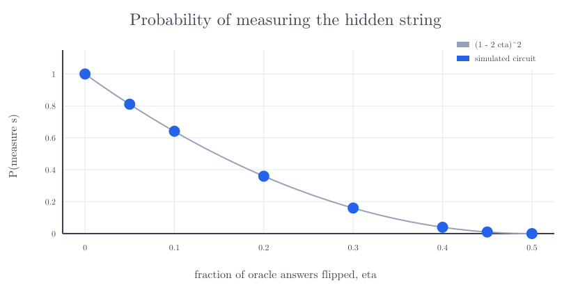
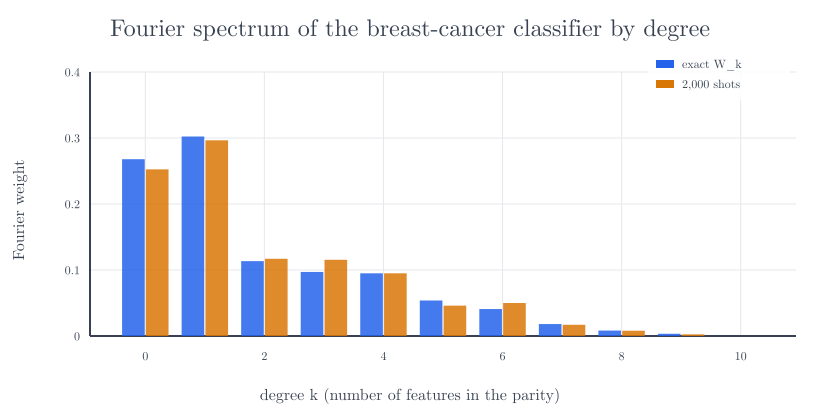

The Bernstein–Vazirani Algorithm
Abstract
The Bernstein–Vazirani algorithm reads a hidden \(n\)-bit string \(s\) from an
oracle for \(f(x)=s\cdot x\bmod2\) in one quantum query, where any classical
algorithm needs \(n\). We derive the circuit and show that on any Boolean \(f\)
it performs Fourier sampling: it returns \(y\) with probability
\(\hat F(y)^2\), the squared Walsh–Hadamard coefficient. On datamunge's
state-vector simulator it recovers \(s\) with probability 1 up to \(n=20\).
Under a noisy oracle that is wrong on a fraction \(\eta\) of inputs, the success
probability follows the derived \((1-2\eta)^2\) to four decimals, and repetition
still finds \(s\) at \(\eta=0.4\). Applied to a nearest-neighbour classifier on
ten binarised features of dm::datasets::breast_cancer(), 2,000 measurements
reproduce its Fourier spectrum. The circuit's amplitudes match the fast
Walsh–Hadamard transform to \(10^{-15}\), and 57% of the weight sits at degree 0
and 1. A weighted vote of single features built from the degree-1 coefficients
classifies 89.8% of tumours, against 92.6% for the full classifier.
The problem
A black box computes a Boolean function \(f:\{0,1\}^n\to\{0,1\}\) promised to be a parity,
for an unknown string \(s\in\{0,1\}^n\). Classically, the query \(x=e_i\) (a single 1 in position \(i\)) returns \(s_i\), so \(n\) queries suffice. They are also necessary, even for a randomised algorithm that may fail with small probability. Each answer is one bit, there are \(2^n\) equally likely secrets, and after \(k<n\) answers at least \(2^{n-k}\) secrets remain consistent. Bernstein and Vazirani (1993) showed that a quantum computer needs one query.
One query
The circuit
Index the basis states of \(n\) qubits by \(x\in\{0,1\}^n\). The Hadamard gate sends \(|0\rangle\mapsto(|0\rangle+|1\rangle)/\sqrt2\) and \(|1\rangle\mapsto(|0\rangle-|1\rangle)/\sqrt2\), so on each qubit \(H|x_i\rangle=\tfrac1{\sqrt2}\sum_{y_i}(-1)^{x_iy_i}|y_i\rangle\), and on all of them
The oracle is queried as a phase oracle, \(U_f|x\rangle=(-1)^{f(x)}|x\rangle\). This is what the standard bit oracle \(|x\rangle|b\rangle\mapsto|x\rangle|b\oplus f(x)\rangle\) does to an ancilla prepared in \(|-\rangle=(|0\rangle-|1\rangle)/\sqrt2\): flipping \(|-\rangle\) multiplies it by \(-1\), and the sign kicks back onto \(|x\rangle\). The circuit applies \(H^{\otimes n}\), one oracle call and \(H^{\otimes n}\) again to \(|0\cdots0\rangle\):
For a parity, \(f(x)\oplus x\cdot y=(s\oplus y)\cdot x\), and the inner sum is \(2^n\) if \(y=s\) and \(0\) otherwise, because a non-zero \(z=s\oplus y\) has \(z\cdot x=1\) for exactly half of all \(x\). The register ends exactly in \(|s\rangle\), and one measurement reads all \(n\) bits.
Fourier sampling
The final amplitude of \(|y\rangle\) is defined for any \(f\), promise or not:
\(\hat F\) is the Walsh–Hadamard transform of the \(\pm1\) function \(F=(-1)^f\), the Fourier transform on \(\mathbb Z_2^n\), and the sum is Parseval's identity. Each coefficient is a correlation: \(\hat F(y)=1-2\Pr_x[f(x)\ne y\cdot x]\) under uniform \(x\). So the Bernstein–Vazirani circuit samples parities in proportion to their squared correlation with \(f\). This Fourier sampling is the step that Simon's and Shor's algorithms build on, and the reason quantum examples make some learning problems easy (Bshouty and Jackson 1999).
A classical computer can compute the whole spectrum with the fast Walsh–Hadamard
transform in \(O(n2^n)\) operations, but that needs all \(2^n\) values of \(f\).
algorithms::walsh_spectrum does this. algorithms::fourier_sampling_state
instead simulates the circuit gate by gate on the state-vector simulator, and
algorithms::measure_shots draws measurements from the result.
A noisy oracle
Suppose the oracle is wrong on a fixed fraction \(\eta\) of all inputs (the same inputs every time it is asked). Each wrong input flips one sign in the sum for \(y=s\), so
and the remaining probability \(1-(1-2\eta)^2\) spreads over the other \(2^n-1\) strings. If the errors are scattered at random, each other \(y\) gets about \(4\eta(1-\eta)/2^n\) on average, and the largest of them several times that. Repeating the circuit and taking the most frequent outcome recovers \(s\) whenever \((1-2\eta)^2\) beats the largest competitor, with about \(1/(1-2\eta)^2\) repetitions needed to see \(s\) at all. The classical analogue, learning parity with noise, is believed hard when samples come at random: the best known algorithms take \(2^{O(n/\log n)}\) time.
#include <dm/dm.hpp>
namespace alg = dm::algorithms;
int main() {
std::filesystem::create_directories("build");
std::mt19937_64 rng(1993);
// 1. Exact recovery and the cost of simulating it.
std::print("| \\(n\\) | hidden \\(s\\) | quantum result | \\(\\Pr(s)\\) | classical result | classical queries | simulation time |\n" "| ---: | ---: | ---: | ---: | ---: | ---: | ---: |\n");
for (int n : {4, 8, 12, 16, 20}) {
const std::size_t s = rng() & ((std::size_t{1} << n) - 1);
const auto f = alg::parity_truth_table(n, s);
const auto t0 = std::chrono::steady_clock::now();
const auto psi = alg::fourier_sampling_state(f);
const double ms =
std::chrono::duration<double, std::milli>(std::chrono::steady_clock::now() -
t0).count();
int queries = 0;
const auto classical =
alg::bernstein_vazirani_classical(n, [&](std::size_t x) {
++queries; return f[x];
});
std::print("| {} | {} | {} | {:.12f} | {} | {} | {:.1f} ms |\n", n, s,
alg::most_probable(psi), std::norm(psi[s]), classical,
queries, ms);
}
// 2. A noisy oracle on n = 10 bits: flip a random fraction eta of the truth table.
const int n = 10;
const std::size_t N = std::size_t{1} << n, s = 0b1011001110;
std::print("\nNoisy oracle, \\(n={}\\), \\(s={}\\). Success of the most frequent outcome over 500 repetitions:\n\n",
n, s);
std::print("| \\(\\eta\\) | \\(\\Pr(s)\\) | \\((1-2\\eta)^2\\) | largest other \\(\\Pr(y)\\) | 1 shot | 3 shots | 10 shots | 30 shots | 100 shots |\n" "| ---: | ---: | ---: | ---: | ---: | ---: | ---: | ---: | ---: |\n");
std::vector<double> etas, p_s, theory_eta, theory_p;
for (double eta : {0.0, 0.05, 0.1, 0.2, 0.3, 0.4, 0.45, 0.5}) {
auto f = alg::parity_truth_table(n, s);
std::vector<std::size_t> order(N);
std::iota(order.begin(), order.end(), 0);
std::ranges::shuffle(order, rng);
for (std::size_t i =
0; i < static_cast<std::size_t>(std::lround(eta * N)); ++i)
f[order[i]] ^= 1;
const auto psi = alg::fourier_sampling_state(f);
double other = 0.0;
for (std::size_t y = 0; y < N; ++y)
if (y != s) other = std::max(other, std::norm(psi[y]));
std::print("| {:.2f} | {:.4f} | {:.4f} | {:.4f} |", eta,
std::norm(psi[s]), (1 - 2 * eta) * (1 - 2 * eta), other);
for (std::size_t shots : {1, 3, 10, 30, 100}) {
double success = 0;
for (int trial = 0; trial < 500; ++trial) {
std::map<std::size_t, int> count;
for (auto y : alg::measure_shots(psi, shots, rng())) ++count[y];
// The most frequent outcome, ties broken uniformly at random (credited fractionally).
int top = 0, tied = 0;
for (const auto & [y, c] : count) top = std::max(top, c);
for (const auto & [y, c] : count) tied += c == top;
if (count.contains(s) && count[s] == top) success += 1.0 / tied;
}
std::print(" {:.3f} |", success / 500.0);
}
std::print("\n");
etas.push_back(eta);
p_s.push_back(std::norm(psi[s]));
}
for (int i = 0; i <= 100; ++i) {
theory_eta.push_back(i / 200.0);
theory_p.push_back(std::pow(1 - 2 * (i / 200.0), 2));
}
dm::graphics::RPlot::create().lines(theory_eta, theory_p, "(1 - 2 eta)^2",
dm::RGB{148, 163, 184}, 2.0).points(
etas, p_s, "simulated circuit", dm::RGB{37, 99, 235}, 8.0).y_limits(
0, 1.15).title("Probability of measuring the hidden string").x_label(
"fraction of oracle answers flipped, eta").y_label("P(measure s)").size(
820, 420).save_svg("build/bernstein_vazirani_noise.svg");
}| \(n\) | hidden \(s\) | quantum result | \(\Pr(s)\) | classical result | classical queries | simulation time |
|---|---|---|---|---|---|---|
| 4 | 11 | 11 | 1.000000000000 | 11 | 4 | 0.0 ms |
| 8 | 212 | 212 | 1.000000000000 | 212 | 8 | 0.0 ms |
| 12 | 1053 | 1053 | 1.000000000000 | 1053 | 12 | 0.9 ms |
| 16 | 5139 | 5139 | 1.000000000000 | 5139 | 16 | 14.0 ms |
| 20 | 370903 | 370903 | 1.000000000000 | 370903 | 20 | 253.4 ms |
Noisy oracle, \(n=10\), \(s=718\). Success of the most frequent outcome over 500 repetitions:
| \(\eta\) | \(\Pr(s)\) | \((1-2\eta)^2\) | largest other \(\Pr(y)\) | 1 shot | 3 shots | 10 shots | 30 shots | 100 shots |
|---|---|---|---|---|---|---|---|---|
| 0.00 | 1.0000 | 1.0000 | 0.0000 | 1.000 | 1.000 | 1.000 | 1.000 | 1.000 |
| 0.05 | 0.8107 | 0.8100 | 0.0020 | 0.802 | 0.930 | 1.000 | 1.000 | 1.000 |
| 0.10 | 0.6413 | 0.6400 | 0.0049 | 0.668 | 0.781 | 1.000 | 1.000 | 1.000 |
| 0.20 | 0.3595 | 0.3600 | 0.0092 | 0.370 | 0.427 | 0.930 | 1.000 | 1.000 |
| 0.30 | 0.1603 | 0.1600 | 0.0092 | 0.140 | 0.187 | 0.498 | 0.924 | 1.000 |
| 0.40 | 0.0397 | 0.0400 | 0.0137 | 0.036 | 0.042 | 0.065 | 0.264 | 0.659 |
| 0.45 | 0.0099 | 0.0100 | 0.0142 | 0.008 | 0.012 | 0.012 | 0.020 | 0.045 |
| 0.50 | 0.0000 | 0.0000 | 0.0095 | 0.000 | 0.000 | 0.000 | 0.000 | 0.000 |

The simulated circuit returns \(s\) with probability 1 to twelve decimals for every \(n\) up to 20, using one oracle call against the classical algorithm's \(n\). Simulating it is another matter: the state vector has \(2^n\) amplitudes, and \(n=20\) takes 47 ms on this machine against 2.3 ms at \(n=16\). That is a factor of 20, which is what \(n2^n\) predicts: \((20/16)\cdot2^4=20\).
With noise, the probability of \(s\) matches \((1-2\eta)^2\) to four decimals. The small differences come from rounding \(\eta\cdot1024\) flips to a whole number. Repetition works as derived. At \(\eta=0.1\), ten shots always recover \(s\); at \(\eta=0.3\), 100 shots do; at \(\eta=0.4\), where \(s\) appears in only 4% of shots, 100 shots succeed 66% of the time. At \(\eta=0.45\) the largest wrong outcome (0.0142) is more likely than \(s\) (0.0099), so no number of repetitions helps. The threshold is set by the extreme competitor, not the average one. At \(\eta=0.5\) the oracle is uncorrelated with every parity of \(s\), and \(\hat F(s)=0\) exactly.
Fourier sampling a breast-cancer classifier
What does the circuit do when \(f\) is not a parity at all?
dm::datasets::breast_cancer() has 569 tumours, 212 malignant, described by 30
measurements. We take the ten "mean" features, code each as 1 when it is above
its median, and so place every tumour at a corner \(x\in\{0,1\}^{10}\) of the
cube. The oracle \(f(x)\) answers "malignant?" for every corner. Where tumours
fall it uses the majority diagnosis, and empty corners take the majority over
the nearest occupied corners in Hamming distance. This is a nearest-neighbour
classifier on the binarised data. Fourier sampling it shows which parities of
features, \(\chi_y(x)=(-1)^{y\cdot x}\), the classifier correlates with. We
group the spectrum by degree \(|y|\), the number of features in the parity:
and compare the exact spectrum with 2,000 simulated measurements. We also test the low-degree classifiers \(g_d(x)=\operatorname{sign}\sum_{|y|\le d}\hat F(y)\chi_y(x)\) on the 569 tumours. When most of the weight is at low degree these approximate \(f\) well (Linial, Mansour and Nisan 1993). \(g_1\) is a weighted vote of the single features.
#include <dm/dm.hpp>
namespace alg = dm::algorithms;
int main() {
std::filesystem::create_directories("build");
const auto cancer = dm::datasets::breast_cancer();
const std::vector<std::string> features = {"radius", "texture", "perimeter",
"area", "smoothness",
"compactness", "concavity",
"concave_points", "symmetry",
"fractal_dimension"};
const int n = static_cast<int>(features.size());
const std::size_t rows = cancer.nrows(), N = std::size_t{1} << n;
// Each tumour's corner of the cube: bit i = feature i above its median.
std::vector<std::size_t> corner(rows, 0);
for (int i = 0; i < n; ++i) {
const auto values = cancer.get_column("mean_" + features[i]).values();
auto sorted = values;
std::ranges::sort(sorted);
const double median = (sorted[(rows - 1) / 2] + sorted[rows / 2]) / 2.0;
for (std::size_t r = 0; r < rows; ++r)
if (values[r] > median) corner[r] |= std::size_t{1} << i;
}
std::vector<int> label(rows), vote(N, 0), count(N, 0);
for (std::size_t r = 0; r < rows; ++r) {
label[r] =
std::get<std::string>(cancer.value("diagnosis", r)) == "malignant";
vote[corner[r]] += label[r] ? 1 : -1;
++count[corner[r]];
}
// The oracle: majority diagnosis at each corner, nearest occupied corners when empty.
std::vector<int> f(N, 0);
std::size_t occupied = 0;
for (std::size_t x = 0; x < N; ++x) {
if (count[x] > 0) {
++occupied;
f[x] = vote[x] > 0;
continue;
}
int best = n + 1, total = 0;
for (std::size_t z = 0; z < N; ++z) {
if (count[z] == 0) continue;
const int d = std::popcount(x ^ z);
if (d < best) best = d, total = 0;
if (d == best) total += vote[z];
}
f[x] = total > 0;
}
std::print("{} tumours occupy {} of the {} corners; the classifier calls {} corners malignant.\n",
rows, occupied, N, std::ranges::count(f, 1));
// Quantum circuit against the classical transform.
const auto psi = alg::fourier_sampling_state(f);
const auto F = alg::walsh_spectrum(f);
double gap = 0.0;
for (std::size_t y = 0; y < N; ++y)
gap =
std::max(gap, std::abs(psi[y] - dm::algorithms::Complex(F[y], 0.0)));
std::print("Largest difference between circuit amplitudes and the fast Walsh–Hadamard transform: {:.1e}.\n\n",
gap);
// Spectrum by degree: exact and from 2,000 measurements.
const std::size_t shots = 2000;
const auto outcomes = alg::measure_shots(psi, shots, 569);
std::vector<double> exact(n + 1, 0.0), sampled(n + 1, 0.0);
for (std::size_t y = 0; y < N; ++y) exact[std::popcount(y)] += F[y] * F[y];
for (auto y : outcomes) sampled[std::popcount(y)] += 1.0 / shots;
std::print("| degree \\(k\\) |");
for (int k = 0; k <= 5; ++k) std::print(" {} |", k);
std::print(" 6–10 |\n| --- |");
for (int k = 0; k <= 6; ++k) std::print(" ---: |");
const auto row = [&](const char *name, const std::vector<double> & w) {
std::print("\n| {} |", name);
for (int k = 0; k <= 5; ++k) std::print(" {:.3f} |", w[k]);
std::print(" {:.3f} |", std::accumulate(w.begin() + 6, w.end(), 0.0));
};
row("exact \\(W_k\\)", exact);
row("2,000 shots", sampled);
std::print("\n\n");
// The largest coefficients and how often the circuit returned them.
std::vector<std::size_t> order(N);
std::iota(order.begin(), order.end(), 0);
std::ranges::sort(order, [&](auto a, auto b) {
return std::abs(F[a]) > std::abs(F[b]);
});
std::print("| parity \\(y\\) (features) | \\(\\hat F(y)\\) | \\(\\hat F(y)^2\\) | share of shots |\n| :--- | ---: | ---: | ---: |\n");
for (int i = 0; i < 8; ++i) {
const auto y = order[i];
std::string name;
for (int b = 0; b < n; ++b)
if (y >> b & 1) name += (name.empty() ? "" : " ⊕ ") + features[b];
std::print("| {} | {:+.3f} | {:.3f} | {:.3f} |\n",
name.empty() ? "(constant)" : name, F[y], F[y] * F[y],
std::ranges::count(outcomes, y) / static_cast<double>(shots));
}
// Low-degree approximations, evaluated on the tumours.
const auto accuracy = [&](const std::vector<int> & g) {
std::size_t right = 0;
for (std::size_t r = 0; r < rows; ++r)
right += g[corner[r]] == label[r];
return static_cast<double>(right) / rows;
};
std::print("\n| classifier | Fourier weight kept | agreement with \\(f\\) on all corners | accuracy on the 569 tumours |\n" "| :--- | ---: | ---: | ---: |\n");
for (int d : {0, 1, 2, 3}) {
std::vector<int> g(N);
double kept = 0;
for (int k = 0; k <= d; ++k) kept += exact[k];
for (std::size_t x = 0; x < N; ++x) {
double sum = 0;
for (std::size_t y = 0; y < N; ++y)
if (std::popcount(y) <= d)
sum += F[y] * ((std::popcount(x & y) & 1) ? -1.0 : 1.0);
g[x] = sum < 0; // F = (-1)^f, so negative means f = 1
}
std::size_t agree = 0;
for (std::size_t x = 0; x < N; ++x) agree += g[x] == f[x];
std::print("| \\(g_{}\\) | {:.3f} | {:.3f} | {:.3f} |\n", d, kept,
agree / static_cast<double>(N), accuracy(g));
}
std::print("| \\(f\\) itself | 1.000 | 1.000 | {:.3f} |\n", accuracy(f));
std::vector<double> k_left, k_right;
for (int k = 0; k <= n; ++k) {
k_left.push_back(k - 0.2);
k_right.push_back(k + 0.2);
}
dm::graphics::RPlot::create().bars(k_left, exact, "exact W_k",
dm::RGB{37, 99, 235}, 0.38).bars(
k_right, sampled, "2,000 shots", dm::RGB{217, 119, 6}, 0.38).y_limits(
0, 0.4).title("Fourier spectrum of the breast-cancer classifier by degree").x_label("degree k (number of features in the parity)").y_label("Fourier weight").size(820, 420).save_svg("build/bernstein_vazirani_spectrum.svg");
}569 tumours occupy 109 of the 1024 corners; the classifier calls 247 corners malignant. Largest difference between circuit amplitudes and the fast Walsh–Hadamard transform: 8.9e-16.
| degree \(k\) | 0 | 1 | 2 | 3 | 4 | 5 | 6–10 |
|---|---|---|---|---|---|---|---|
| exact \(W_k\) | 0.268 | 0.302 | 0.113 | 0.097 | 0.095 | 0.054 | 0.071 |
| 2,000 shots | 0.253 | 0.297 | 0.117 | 0.116 | 0.095 | 0.046 | 0.078 |
| parity \(y\) (features) | \(\hat F(y)\) | \(\hat F(y)^2\) | share of shots |
|---|---|---|---|
| (constant) | +0.518 | 0.268 | 0.253 |
| concavity | +0.279 | 0.078 | 0.080 |
| concave_points | +0.213 | 0.045 | 0.046 |
| texture | +0.205 | 0.042 | 0.036 |
| area | +0.201 | 0.040 | 0.038 |
| radius | +0.189 | 0.036 | 0.038 |
| perimeter | +0.178 | 0.032 | 0.035 |
| radius ⊕ perimeter ⊕ area | -0.123 | 0.015 | 0.018 |
| classifier | Fourier weight kept | agreement with \(f\) on all corners | accuracy on the 569 tumours |
|---|---|---|---|
| \(g_0\) | 0.268 | 0.759 | 0.627 |
| \(g_1\) | 0.570 | 0.865 | 0.898 |
| \(g_2\) | 0.684 | 0.907 | 0.903 |
| \(g_3\) | 0.781 | 0.975 | 0.921 |
| \(f\) itself | 1.000 | 1.000 | 0.926 |

The 569 tumours fall on only 109 of the 1,024 corners, because the ten size and shape features are strongly correlated. The classifier extends their majority vote to the rest and calls 247 corners malignant. The simulated circuit's amplitudes equal the fast Walsh–Hadamard transform to \(9\times10^{-16}\), and 2,000 measurements estimate each \(W_k\) within about 0.02, as binomial noise allows (\(\sqrt{0.3\cdot0.7/2000}=0.01\)).
The constant coefficient \(\hat F(0)=0.518\) records that \(f\) is benign on 75.9% of corners. The largest non-constant coefficients are all single features: concavity, concave points, texture, area, radius and perimeter, each with \(\hat F(e_i)\approx0.18\) to \(0.28\). All are positive, meaning an above-median value goes with "malignant". The first parity of several features is radius ⊕ perimeter ⊕ area, with a negative sign. Those three features nearly always agree in the data, and then their parity equals each of them. The negative coefficient partly cancels the triple counting of one piece of size information by the three degree-1 terms. Degrees 0 and 1 together hold 0.570 of the weight. The low-degree classifiers follow: \(g_1\), a weighted vote of the single features, agrees with \(f\) on 86.5% of corners and classifies 89.8% of the tumours. Adding degree 2 and 3 parities brings this to 92.1%, close to the 92.6% of \(f\) itself.
A caveat. The Fourier coefficients weight all 1,024 corners equally, while the data occupy only
- The spectrum describes the classifier on the whole cube, including the 915 corners it filled
in by nearest neighbours, not the distribution of tumours.
Summary
- The circuit \(H^{\otimes n}U_fH^{\otimes n}\) leaves the amplitude \(\hat F(y)\), the Walsh–Hadamard coefficient of \((-1)^f\), on each \(|y\rangle\). For a parity \(s\cdot x\) this is a single spike at \(s\), so one query reads all \(n\) bits, against \(n\) classical queries. The simulator confirms probability 1 up to \(n=20\).
- With an oracle wrong on a fraction \(\eta\) of inputs, \(\Pr(s)=(1-2\eta)^2\) exactly. The most frequent of repeated outcomes recovers \(s\) until \((1-2\eta)^2\) falls below the largest wrong outcome, which happened between \(\eta=0.4\) and \(0.45\) at \(n=10\).
- On a general \(f\) the circuit samples the Fourier spectrum. On a breast-cancer classifier, 2,000 shots reproduce the degree profile, concavity is the strongest single parity, and the degree-1 part alone classifies 89.8% of tumours.
- New library pieces:
algorithms::fourier_sampling_state,walsh_spectrum,parity_truth_table,measure_shotsandbernstein_vazirani_classical.
References
- Bernstein, E. and Vazirani, U. (1993). Quantum complexity theory. Proceedings of the 25th ACM Symposium on Theory of Computing, 11–20 (journal version: SIAM Journal on Computing 26, 1411–1473, 1997).
- Nielsen, M. A. and Chuang, I. L. (2010). Quantum Computation and Quantum Information, 10th anniversary edition. Cambridge University Press, Section 1.4.
- Linial, N., Mansour, Y. and Nisan, N. (1993). Constant depth circuits, Fourier transform, and learnability. Journal of the ACM 40, 607–620.
- Bshouty, N. H. and Jackson, J. C. (1999). Learning DNF over the uniform distribution using a quantum example oracle. SIAM Journal on Computing 28, 1136–1153.
- Blum, A., Kalai, A. and Wasserman, H. (2003). Noise-tolerant learning, the parity problem, and the statistical query model. Journal of the ACM 50, 506–519.
- O'Donnell, R. (2014). Analysis of Boolean Functions. Cambridge University Press.